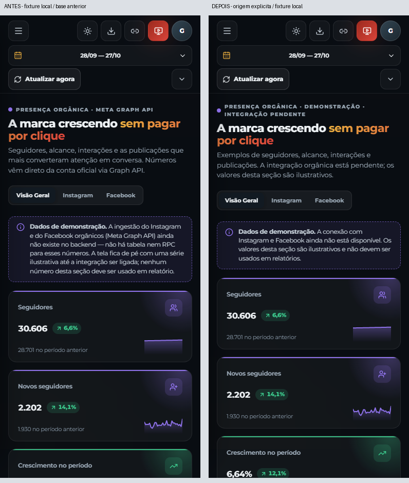
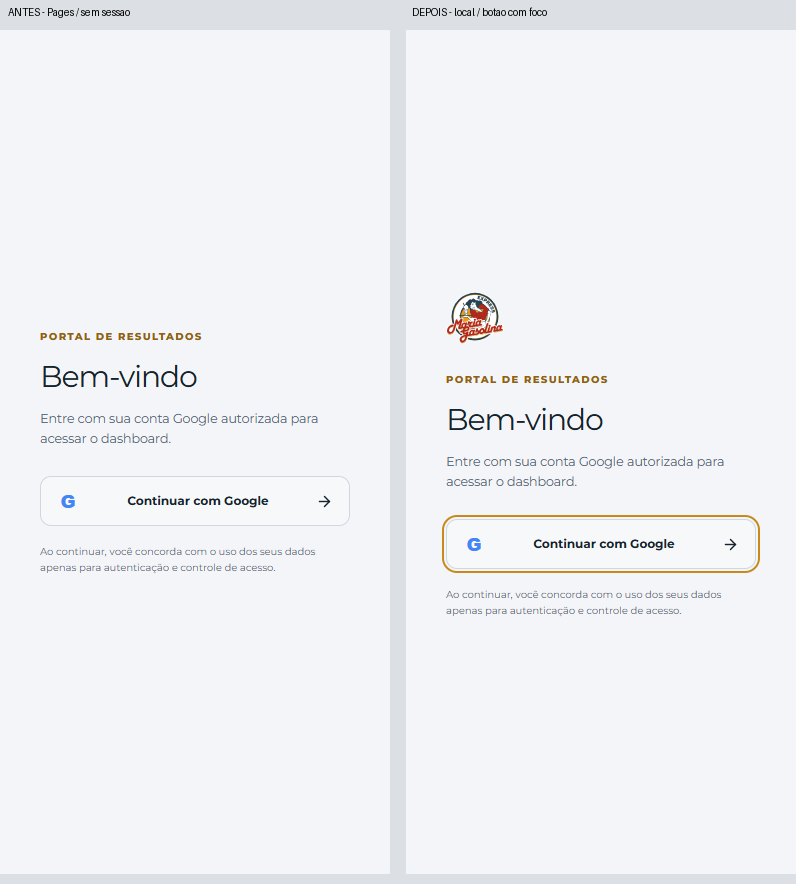

O Orgânico continua usando a demonstração preexistente, agora identificada desde o cabeçalho. O logo já existente aparece no login quando o painel lateral é oculto. Nenhuma integração ou autenticação foi alterada.

Antes: Pages sem sessão. Depois: teste local com botão focado; a borda de foco já existia.
